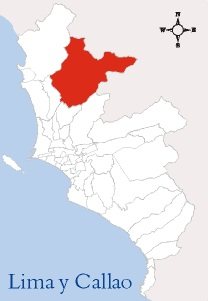
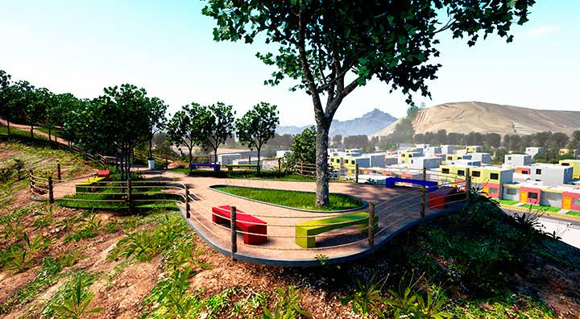
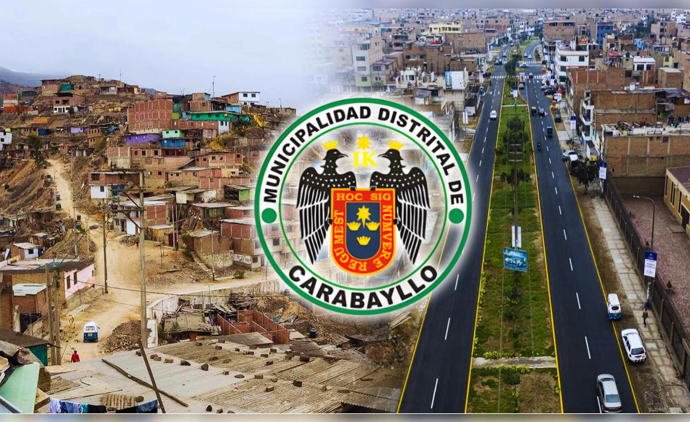
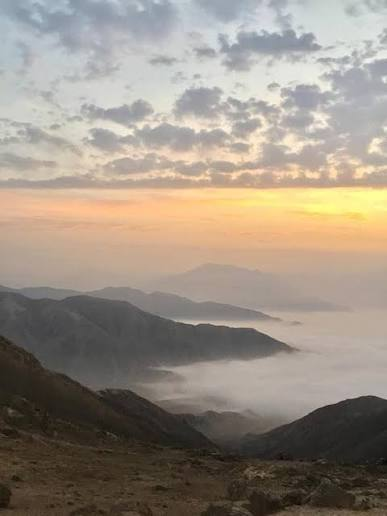

Historia, cultura y lugares importantes
🇵🇪 Lima - Perú

Carabayllo es un distrito ubicado en Lima Norte, en el departamento de Lima, Perú.
El distrito se encuentra relacionado con el valle del río Chillón.
Carabayllo posee una historia muy antigua. Su territorio estuvo ocupado por diferentes sociedades antes de la llegada de los españoles.
Durante la época colonial se creó el pueblo de San Pedro de Carabayllo.
Con el paso del tiempo, Carabayllo fue creciendo y actualmente forma parte de Lima Metropolitana.
Carabayllo cuenta con lugares históricos y restos arqueológicos.
Sus habitantes conservan diferentes costumbres y celebraciones.
El valle del río Chillón ha tenido importancia para la agricultura.
Es uno de los lugares históricos más importantes de Carabayllo.
Es una construcción histórica relacionada con la época de la Independencia del Perú.
Es un sitio arqueológico relacionado con la historia prehispánica del valle.
La gastronomía de Carabayllo forma parte de la diversidad de comidas que podemos encontrar en Lima Norte.
Los platos de la cocina criolla forman parte de la gastronomía local.
La agricultura del valle del Chillón ha sido importante para la zona.
Este proyecto consiste en crear un cubo Rubik personalizado con elementos representativos de Carabayllo.
El código QR colocado en el empaque permite acceder a esta página web y conocer más sobre la historia y cultura del distrito.
Algunas imágenes de Carabayllo.



Municipalidad de Carabayllo
Ministerio de Cultura
Mincetur